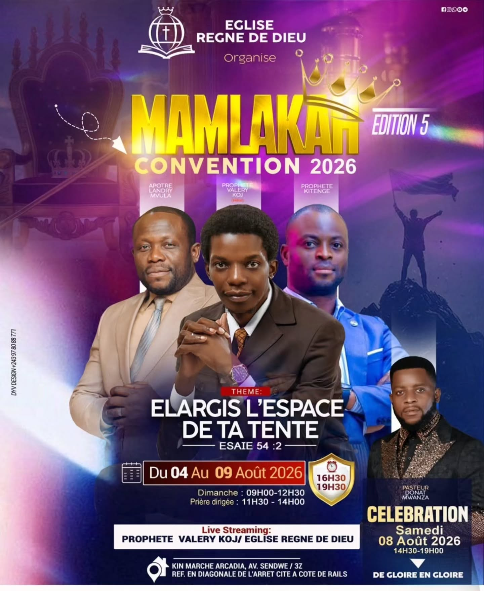
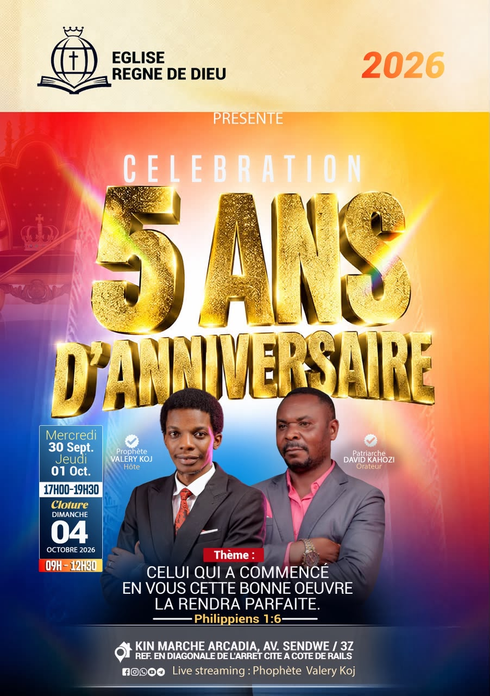

Chaque mardi
Culte d’enseignement & prière
De 17 h à 19 h 20 selon l’affiche disponible dans le dépôt du site : un temps de Parole, d’enseignement et de prière.
Vie de l’église
Célébrations, enseignements et temps forts : retrouvez les rencontres annoncées par l’Église Règne de Dieu.
De 17 h à 19 h 20 selon l’affiche disponible dans le dépôt du site : un temps de Parole, d’enseignement et de prière.

De 17 h à 19 h 20 selon l’affiche actuellement disponible dans le dépôt du site. Confirmez l’horaire avant de vous déplacer.

La 4ᵉ édition a eu lieu du 26 au 31 mai 2026. Thème : « La maturité spirituelle et l’élargissement d’espace ». La prochaine date sera annoncée par l’église.

La 5ᵉ édition s’est tenue du 4 au 9 août 2026, autour du thème « Élargis l’espace de ta tente » (Ésaïe 54:2). Une célébration était annoncée le samedi 8 août, de 14 h 30 à 19 h, à Kin Marché Arcadia, avenue Sendwe/3Z. La prochaine date n’est pas encore publiée.

Rencontres les mercredi 30 septembre et jeudi 1ᵉʳ octobre, de 17 h à 19 h 30; clôture le dimanche 4 octobre 2026, de 9 h à 12 h 30. Thème : « Celui qui a commencé en vous cette bonne œuvre la rendra parfaite » (Philippiens 1:6). Kin Marché Arcadia, avenue Sendwe/3Z.
Les horaires et dates peuvent évoluer : confirmez les informations auprès de l’église avant de vous déplacer. Nous contacter.